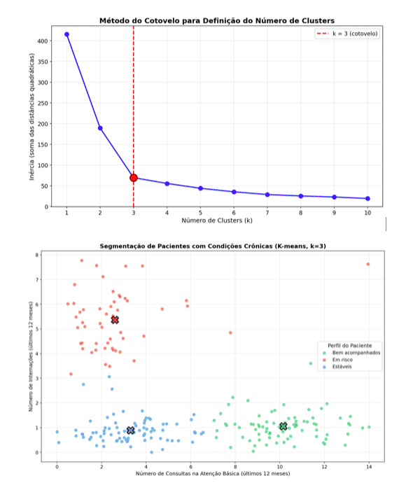
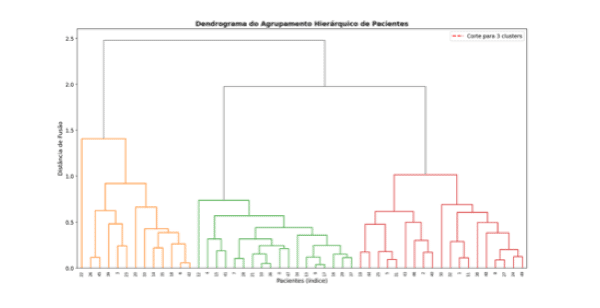
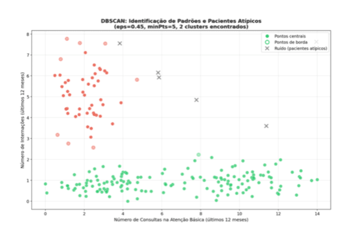

Módulo 3 | Aula 4
Aprendizado Não supervisionado
Treinamento de modelos de agrupamento
No aprendizado não supervisionado, o treinamento do modelo ocorre diretamente sobre os dados disponíveis, não sendo necessária a divisão em conjuntos de treino e teste. O objetivo é identificar estruturas internas e padrões de similaridade entre os objetos. Uma das abordagens mais comuns para atingir esse objetivo é o agrupamento de dados, que busca organizar os objetos em grupos de acordo com sua similaridade.
Existem diversos algoritmos para o agrupamento de dados, entre eles o k-means, o agrupamento hierárquico e o Density-Based Spatial Clustering and Application with Noise
k-means: é um algoritmo particional que divide os dados em um número k de grupos, também conhecido como clusters, buscando minimizar a variabilidade interna de cada grupo e maximizar a diferença entre eles.
Após a definição do valor de k, o algoritmo seleciona centroides iniciais e, de forma iterativa, atribui cada objeto ao cluster mais próximo e recalcula os centroides até que os grupos se estabilizem.
Na prática, o número de clusters k nem sempre é conhecido previamente. Por esse motivo, são utilizados métodos que auxiliam na escolha de um valor adequado de k, avaliando como a qualidade do agrupamento varia à medida que o número de grupos aumenta.
Um dos métodos mais utilizados é o método do cotovelo, que analisa a variabilidade interna dos clusters para diferentes valores de k. A escolha ideal ocorre no ponto em que a redução dessa variabilidade passa a ser pouco significativa, formando visualmente um “cotovelo” no gráfico.
Perfis de pacientes com condições crônicas
Considere uma base de dados com pacientes portadores de doenças crônicas, contendo duas variáveis: número de consultas na atenção básica nos últimos 12 meses (eixo X) e número de internações no mesmo período (eixo Y). O objetivo é identificar perfis de utilização dos serviços para direcionar ações de cuidado.
Para determinar o número ideal de clusters, aplicamos o método do cotovelo. No gráfico, observamos que a redução da inércia diminui significativamente até k=3, formando um "cotovelo" nesse ponto.
Após executar o k-means com k=3, os pacientes são agrupados em três perfis: pacientes bem acompanhados (alta frequência de consultas e poucas internações), pacientes em risco (baixa frequência de consultas e muitas internações) e pacientes estáveis (baixa frequência de consultas e poucas internações). Essa segmentação permite priorizar a busca ativa de pacientes em risco e fortalecer o vínculo com a equipe de saúde.

Agrupamento hierárquico: o agrupamento hierárquico gera uma sequência de partições aninhadas, a partir de uma matriz de proximidade representando as relações de similaridade entre os objetos por meio de uma estrutura em forma de árvore, chamada dendrograma. Existem dois principais métodos de agrupamento hierárquico: aglomerativo e divisivo.
Começa tratando cada objeto como um cluster individual e, em seguida, combina os clusters mais próximos iterativamente até que todos os pontos estejam no mesmo cluster ou até atingir um número desejado de clusters. O agrupamento dos objetos podem ser por:
- Single linkage: os clusters são aglomerados considerando-se a menor distância entre qualquer par de objetos.
- Complete linkage: os clusters são aglomerados considerando-se a maior distância entre qualquer par de objetos.
- Average linkage: os clusters são aglomerados com base na distância média entre todos os pares de objetos
Começa com todos os objetos em um único cluster e divide-o iterativamente em subgrupos até que cada objeto pertença a um único cluster.
O resultado do agrupamento hierárquico pode ser representado por um dendrograma, que ilustra graficamente a sequência de fusões ou divisões entre os objetos.
O número final de clusters pode ser definido por meio de um corte no dendrograma. Esse corte é realizado observando-se os níveis de distância em que ocorre uma separação mais acentuada entre os grupos, indicando maior distinção entre os clusters.
Perfis de pacientes com condições crônicas
Utilizando os mesmos dados de pacientes, aplicamos o agrupamento hierárquico aglomerativo com o método average linkage. O dendrograma resultante mostra a sequência de fusões entre os pacientes com base na similaridade de seus padrões de utilização.
Ao realizar um corte horizontal no dendrograma em um nível de distância com maior separação entre as ramificações, identificamos três grupos principais: pacientes bem acompanhados, em risco e estáveis.
A análise do dendrograma permite identificar subgrupos clinicamente relevantes. Entre os pacientes em risco, por exemplo, é possível distinguir aqueles com internações frequentes por descompensação aguda daqueles com internações prolongadas por complicações crônicas. Essa granularidade auxilia a equipe de saúde a elaborar planos de cuidado individualizados.

DBSCAN: é um algoritmo que forma grupos ao identificar áreas de alta densidade dos objetos, sendo eficaz para detectar clusters de formas arbitrárias e lidar com ruído nos dados. O DBSCAN não precisa que o número de clusters seja especificado previamente, pois ele funciona identificando áreas densas de pontos e separando-as das áreas esparsas (consideradas ruídos).
O DBSCAN trabalha com pontos centrais, pontos de borda e ruído. Um objeto deve ter um número mínimo de vizinhos dentro de um raio definido para ser considerado um ponto central. Um ponto de borda, por sua vez, está dentro do raio de um ponto central, mas não possui vizinhos suficientes para ser classificado como tal. O ruído é composto por objetos que não pertencem a nenhum clusters. Cada ponto central forma a base de um cluster, agregando os pontos de borda associados.
O desempenho do DBSCAN depende da escolha adequada de seus parâmetros. O parâmetro eps define o raio de vizinhança utilizado para identificar regiões densas, enquanto minPts determina o número mínimo de objetos necessários para formar um ponto central.
A escolha desses parâmetros influencia diretamente a formação dos clusters e a identificação de ruídos.
Identificação de pacientes com padrões atípicos
Aplicando o DBSCAN aos dados de pacientes com os parâmetros eps=0.5 e minPts=4, o algoritmo identifica automaticamente regiões densas correspondentes aos perfis de utilização, sem necessidade de definir previamente o número de clusters.
O resultado revela três clusters principais (pacientes bem acompanhados, em risco e estáveis) e alguns pacientes classificados como ruído — casos atípicos que não se enquadram em nenhum perfil. Esses pacientes podem representar situações excepcionais, como internações por causas externas, diagnósticos recentes ou uso inadequado dos serviços de urgência. A identificação desses casos permite uma avaliação individualizada pela equipe de saúde.
A figura a seguir ilustra os pontos centrais (pacientes típicos de cada perfil), pontos de borda (pacientes na fronteira entre perfis) e ruídos (pacientes com padrões atípicos que merecem atenção especial).

| Tabela Comparativa dos Algoritmos de Agrupamento | |||
|---|---|---|---|
| Critério | K-means | Hierárquico | DBSCAN |
| Necessita definir nº de clusters? | Sim | Não (corte no dendrograma) |
Não |
| Formato dos clusters | Esféricos | Qualquer formato | Qualquer formato |
| Sensibilidade a outliers | Alta | Média | Baixa (detecta como ruído) |
| Complexidade computacional | Baixa | Alta | Média |
| Parâmetros principais | (nº de clusters) | Método de ligação | eps, minPts |
| Detecta casos atípicos? | Não | Não | Sim |
| Aplicação em saúde | Segmentação de perfis de pacientes |
Análise de subgrupos e hierarquias |
Detecção de pacientes com padrões atípicos |